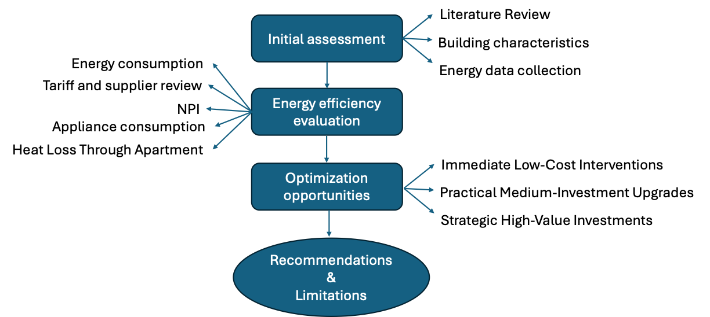
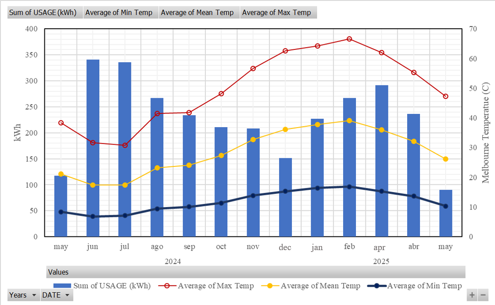
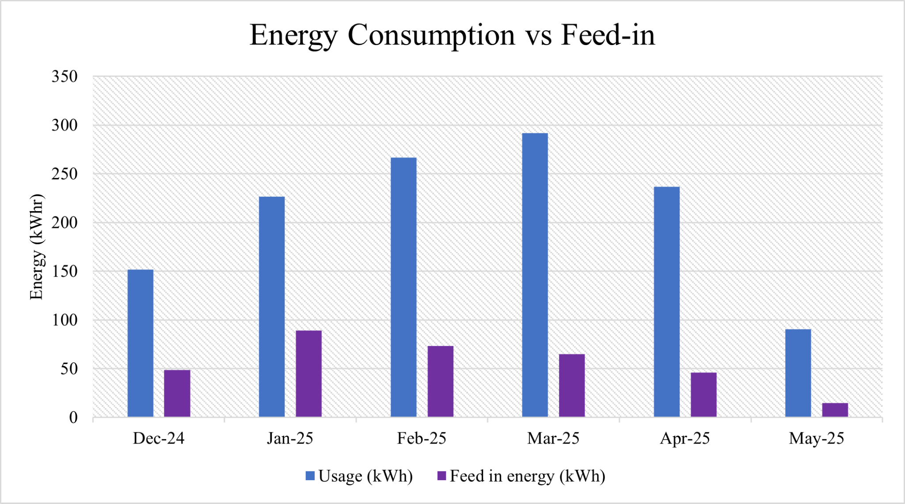
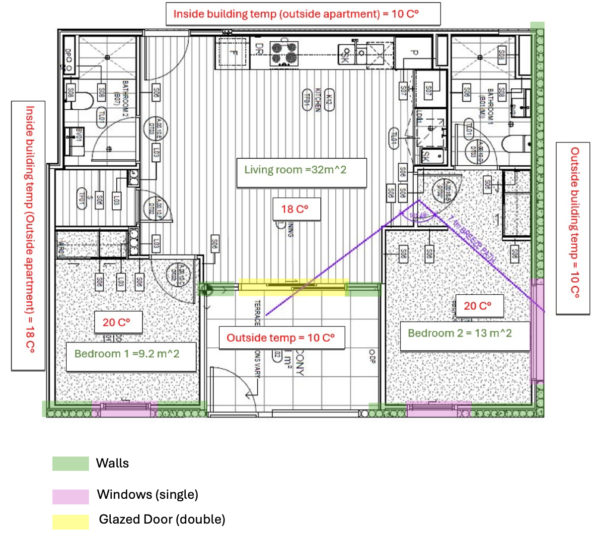

Course
MEC5885 — Energy and Sustainability Project
Institution
Monash University, Clayton
Outcome
Improvement Strategy Within AUD $30,000 Budget
Project Overview
Australian homes account for approximately 24% of national electricity use. This project audited a real two-bedroom apartment in Richmond, Melbourne — occupied by three residents — with the goal of quantifying its energy performance and identifying cost-effective improvements within a defined budget.
The audit spanned one year of energy data (May 2024 to May 2025) sourced from the apartment's provider, Supraenergy. The analysis combined utility bill review, appliance-level consumption surveys, climate-adjusted heating and cooling demand estimation using Heating and Cooling Degree Days (HDD/CDD), steady-state heat loss assessment of the building envelope, and a Normalised Performance Indicator (NPI) calculation to benchmark overall energy efficiency. All proposed improvements were evaluated using NPV analysis at a 5.5% discount rate over a 10-year horizon.
My Contribution
This was a six-person team project. While the report formally lists section assignments, my involvement extended across all areas — reviewing methodology decisions, checking the rigour of calculations, lifting the quality of written sections before submission, and ensuring the final report held together as a coherent, well-reasoned document rather than six disconnected contributions. That kind of cross-cutting quality ownership is a consistent thread across my project work.
Methodology
The audit followed a four-stage structured framework: initial site assessment and data collection, quantitative energy efficiency evaluation, identification of optimisation opportunities, and a costed improvement proposal. Each stage fed directly into the next, with the NPV framework providing a consistent financial lens across all recommendations.

Four-stage audit methodology — from site assessment through to costed recommendationsSite & Energy Profile
The audited apartment sits on the ground floor of a residential complex in Richmond, approximately 500 m from the coast, directly above a concrete basement carpark. The building has no centralised HVAC system — a single reverse-cycle split unit serves the living area only, with no dedicated heating or cooling in the bedrooms. Three occupants shared the 64 m² space during the audit period.
Total grid consumption May 2024 – May 2025. Gas adds a further 1,389 kWh equivalent.
Against a best-practice benchmark of 35–45 kWh/m²/yr for comparable apartments — clear room for improvement.
~717 kWh/year attributed to heating and cooling. The remaining 76% is baseline appliance load.
AUD $742 (69%) from energy use + AUD $334 (31%) from daily supply charges. Solar offset: AUD $84.
Energy Consumption Analysis
Monthly consumption data showed two clear seasonal peaks — a winter peak from June to October driven by heating demand, and a summer peak from January to March driven by cooling. Using an 18°C base temperature for HDD/CDD calculations (the 12°C base produced physically unreasonable results, showing the majority of the year as cooling-dominated), the annual heating and cooling component was isolated at approximately 717 kWh — consistent with the 24% share observed in the utility data.
 Monthly energy distribution — baseline appliance load vs heating/cooling component, overlaid with average monthly temperature
Monthly energy distribution — baseline appliance load vs heating/cooling component, overlaid with average monthly temperature
Solar panels installed on the building began contributing a shared feed-in tariff in December 2024. From December 2024 to May 2025, solar feed-in averaged approximately 56 kWh/month — offsetting around 27% of monthly consumption and reducing the annual bill by AUD $84 over just 4.5 months of operation.


Steady-State Heat Loss Assessment
To quantify where the apartment loses heat, a steady-state analysis was conducted using Q = U·A·ΔT across four envelope elements: ceiling, external walls (adjusted for window and door openings), single-glazed windows, and the single-glazed terrace sliding door. Floor heat loss was excluded — the basement carpark provides a thermal buffer that significantly reduces the ground-floor thermal gradient.
U-values were drawn from Australian construction benchmarks (HVAC benchmark model, Section J1.3): ceiling R = 2.7 (U = 0.37 W/m²K), external walls R = 1.4 (U = 0.71 W/m²K), single-glazed elements U = 2.30 W/m²K. Winter ΔT was calculated at 10°C (indoor 20°C, outdoor average 10°C).

Annotated floor plan — envelope elements, room areas, and measured indoor temperatures used as boundary conditions for heat loss calculationDespite having the largest area, the ceiling and walls together account for ~63% of heat loss — the terrace glazed door alone contributes ~26% despite being a single element, highlighting it as the highest-priority envelope upgrade target.
Improvement Strategy — Three Tiers
All solutions were evaluated using NPV at 5.5% discount rate over 10 years and ranked for practical feasibility against the AUD $30,000 budget. Only interventions with financially defensible payback periods were recommended for immediate action; others were noted as long-term lifestyle or comfort investments.
Immediate — Low Cost
- Behavioural HVAC control — Set cooling ≥24°C, heating ≤20°C. Saves ~53.8 kWh/yr, AUD $13/yr. Zero cost, immediate payback.
- Air-dry laundry — Replace dryer use with patio drying. ~100 kWh/yr saved, AUD $25/yr. Zero cost.
- Smart power strips ×5 — Eliminate ~120 kWh/yr standby load. AUD $150 cost, AUD $30/yr savings. 5-year payback.
- LED lighting ×10 — AUD $150 cost, 350 kWh/yr saved, AUD $87/yr savings. 1.7-year payback. Best ROI of all interventions.
Medium — Comfort Upgrades
- Thermal curtains + window film — AUD $600, 70–100 kWh/yr reduction. Financially marginal (>25yr payback) but meaningful thermal comfort gains.
- Refrigerator upgrade — Old fridge uses ~500 kWh/yr vs 300 kWh/yr for 4.5-star unit. AUD $1,500 cost. Best justified when appliance nears end of life.
- Heat pump hot water — AUD $3,500–$4,500 installed (AUD $3,000 govt rebate available). 650–1,000 kWh/yr savings. High sustainability value.
Strategic — Long-Term Value
- Bedroom split-system HVAC ×2 — AUD $5,500. Comfort and health value; financially weak (>25yr payback) without significant electricity price rises.
- Double-glazed terrace doors — AUD $7,500–$8,500. 150–250 kWh/yr savings, major thermal comfort + acoustic improvement. Long-term property value.
- Solar battery (shared) — AUD ~$10,000 per apartment share. 200–300 kWh/yr grid offset. Energy resilience and sustainability-oriented investment.
Recommendations Summary
Outcomes
NPI Benchmarked
Apartment NPI of 70.88 kWh/m²/yr quantified — nearly double the 35–45 kWh/m²/yr best-practice range, establishing a clear evidence base for improvement.
HVAC Load Isolated
HDD/CDD analysis (18°C base) separated the 717 kWh/yr thermal load from the 2,260 kWh/yr appliance baseline — enabling targeted, evidence-based recommendations.
Heat Loss Quantified
Steady-state envelope assessment identified the terrace glazed door (U = 2.30) as the highest-priority upgrade target at 201W winter loss, despite the ceiling holding the largest area.
Strategy Delivered Within Budget
AUD $26,400 combined improvement package within the AUD $30,000 limit. LED lighting upgrade confirmed as best immediate ROI: AUD $150 cost, 1.7-year payback, AUD $87/yr savings.